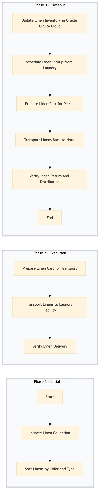

| Role | Steps |
|---|---|
| Housekeeper | 1.1 1.2 |
| Linen Attendant | 2.1 2.2 3.1 3.2 3.3 3.4 |
| Laundry Manager | 2.3 |
| Housekeeping Supervisor | 3.5 |
| Step | Name | Role | System | Input | Output | KPI | Dec? | Exc? | Pain Point / Risk |
|---|---|---|---|---|---|---|---|---|---|
| 1.1 | Initiate Linen Collection | Housekeeper | Oracle OPERA Cloud | Dirty linen bins from guest rooms | Collected linens in designated areas | < 30 min per room block | N | Y | Handling of soiled linens safely and efficiently |
| 1.2 | Sort Linens by Color and Type | Housekeeper | Oracle OPERA Cloud | Collected linens | Sorted linens in color-coded bins | < 15 min per bin | N | Y | Accurate sorting to avoid contamination and ensure proper cleaning |
| 2.1 | Prepare Linen Cart for Transport | Linen Attendant | Oracle OPERA Cloud | Sorted linens | Loaded linen cart | < 5 min per cart | N | Y | Efficient loading to prevent damage and ensure timely delivery |
| 2.2 | Transport Linens to Laundry Facility | Linen Attendant | Oracle OPERA Cloud | Loaded linen cart | Linens delivered to laundry facility | < 10 min per delivery | N | Y | Safe transportation of linens, especially in busy hotel areas |
| 2.3 | Verify Linen Delivery | Laundry Manager | Oracle OPERA Cloud | Delivery confirmation from laundry facility | Acknowledgment of delivery | < 1 min per delivery | N | Y | Ensuring all linens are accounted for and delivered correctly |
| 3.1 | Update Linen Inventory in Oracle OPERA Cloud | Housekeeping Supervisor | Oracle OPERA Cloud | Linen count and status | Updated inventory records | < 5 min per update | N | Y | Accurate tracking of linen usage and inventory levels |
| 3.2 | Schedule Linen Pickup from Laundry | Linen Attendant | Oracle OPERA Cloud | Laundry pickup schedule | Scheduled pickup in Oracle OPERA Cloud | < 1 min per entry | N | Y | Coordinating with laundry for timely pickup |
| 3.3 | Prepare Linen Cart for Pickup | Linen Attendant | Oracle OPERA Cloud | Pickup schedule | Prepared linen cart for pickup | < 5 min per cart | N | Y | Efficient preparation to ensure timely collection |
| 3.4 | Transport Linens Back to Hotel | Linen Attendant | Oracle OPERA Cloud | Loaded linen cart | Linens returned to hotel | < 10 min per delivery | N | Y | Safe transportation of clean linens back to the hotel |
| 3.5 | Verify Linen Return and Distribution | Housekeeping Supervisor | Oracle OPERA Cloud | Return confirmation from linen attendants | Acknowledgment of return and distribution | < 1 min per verification | N | Y | Ensuring all linens are returned and distributed to guest rooms |
The Linen Collection & Sorting process at a Marriott full-service hotel involves collecting dirty linens from guest rooms and sorting them based on color and type for laundry.